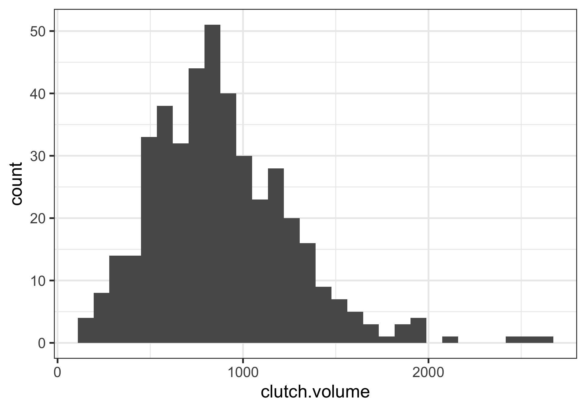

Lesson 8: Data visualization of a single variable
2025-10-22
Where are we?

![A cartoon of a fuzzy round monster face showing 10 different emotions experienced during the process of debugging code. The progression goes from (1) “I got this” - looking determined and optimistic; (2) “Huh. Really thought that was it.” - looking a bit baffled; (3) “...” - looking up at the ceiling in thought; (4) “Fine. Restarting.” - looking a bit annoyed; (5) “OH WTF.” Looking very frazzled and frustrated; (6) “Zombie meltdown.” - looking like a full meltdown; (7) (blank) - sleeping; (8) “A NEW HOPE!” - a happy looking monster with a lightbulb above; (9) “insert awesome theme song” - looking determined and typing away; (10) “I love coding” - arms raised in victory with a big smile, with confetti falling.](../img_slides/debugging.png)
Artwork by @allison_horst
Histograms
- Histograms show the counts of observations (y-axis) that have values within a specific interval for a specific variable (x-axis)
- Show the shape of the distribution and data density
- Distribution is considered symmetric if the trailing parts of the plot are roughly equal
- Distribution is considered asymmetric if one tail trails off more than the other (as we see with clutch volume)
- Asymmetric distributions are said to be skewed
- Skewed right if trails off to right
- Skewed left if trails off to the left

Histograms
- Mode is represented by the tallest peak in the distribution
- When data have one prominent peak, we call it unimodel
- If there is more than one relative peak, we call it multimodel

Boxplots
- A boxplot indicates the positions of the first, second, and third quartiles of a distribution in addition to extreme observations
- Interquartile range (IQR) represented by rectangle with black line through it for the median
- Whiskers extend from the box to capture data that are between \(Q_1\) and \(Q_1 - 1.5 IQR\) and separately between \(Q_3\) and \(Q_3 + 1.5 IQR\)
- An outlier is a value that appears extreme relative to the rest of the data
- It is more than \(1.5IQR\) away from \(Q_1\) and \(Q_3\)